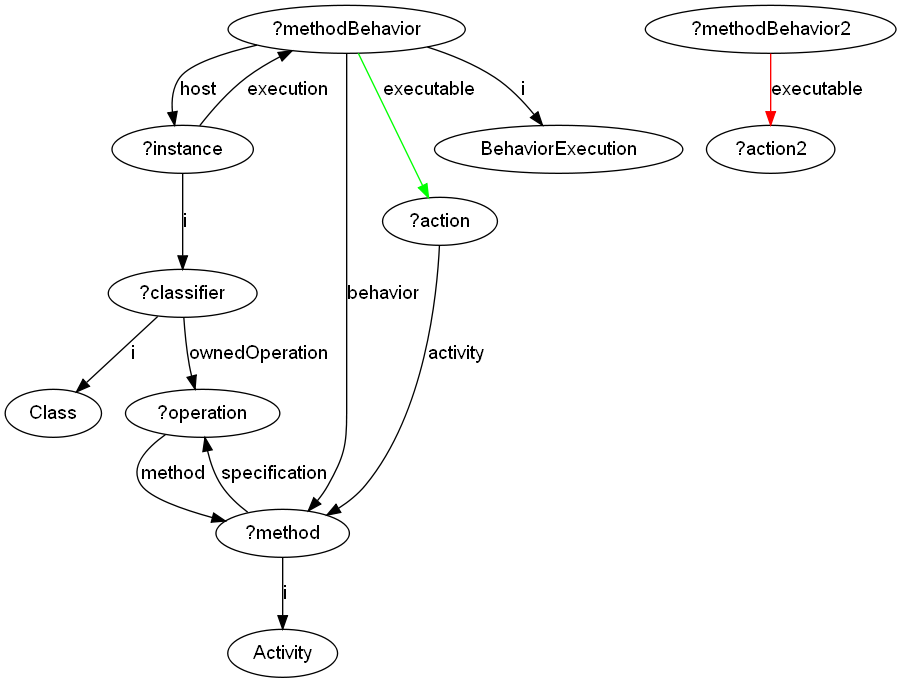

US Section 11.3.10 CallOperationAction
To go to the page containing the rule description in the US pdf document, click here .
{kind=link}
Context
Below is the xml file which defines the order in which the rules are executed.
Rationale
The methodCall suite of rules simulate the effect of a series of actions that have the effect of executing a class 'method' - a type of UML Operation. It is modeled on the acceptEventAction rules. This rule adds the 'execution' edges to each of the actions nested within the method, allowing them to be displayed by GRAF and executed by application of the normal action rules.
This variation is applied as step 2 of the sequence. Like its equivalent for acceptEventAction, it is executed in a loop and uses an NAC to determine when an executable edge has already been drawn. When all 'free' action nodes have been exhausted, the loop ends.
Assumptions/Deviations from the Definition
These rules do not directly implement the CallOperation Action - instead, they simulate their effects. For more information on what this Action should look like on full implementation, see the explanation here.